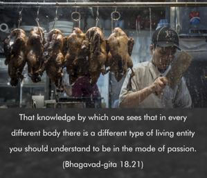
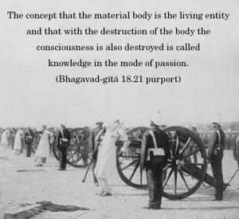

That knowledge by which one sees that in every different body there is a different type of living entity you should understand to be in the mode of passion.


The concept that the material body is the living entity and that with the destruction of the body the consciousness is also destroyed is called knowledge in the mode of passion. According to that knowledge, bodies differ from one another because of the development of different types of consciousness, otherwise there is no separate soul which manifests consciousness. The body is itself the soul, and there is no separate soul beyond the body. According to such knowledge, consciousness is temporary. Or else there are no individual souls, but there is an all-pervading soul, which is full of knowledge, and this body is a manifestation of temporary ignorance. Or beyond this body there is no special individual or supreme soul. All such conceptions are considered products of the mode of passion.